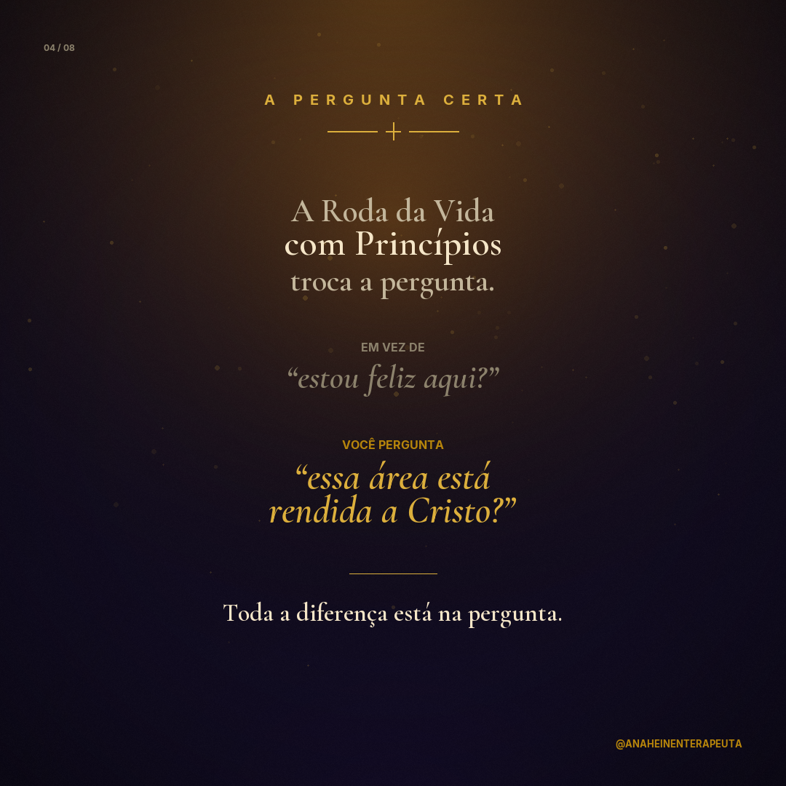
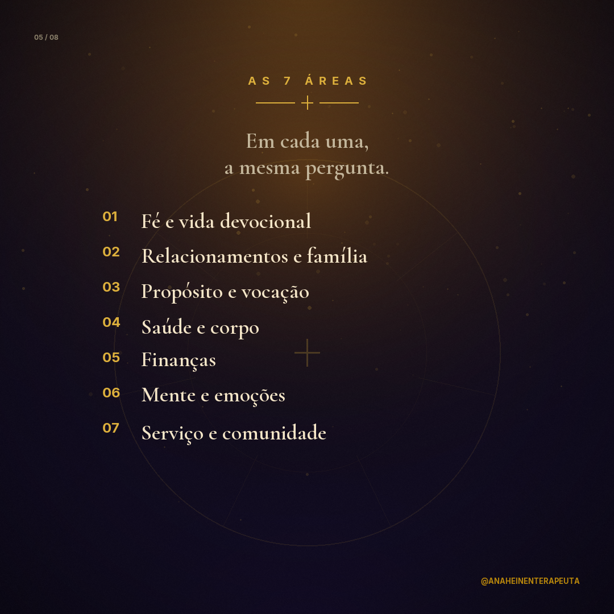
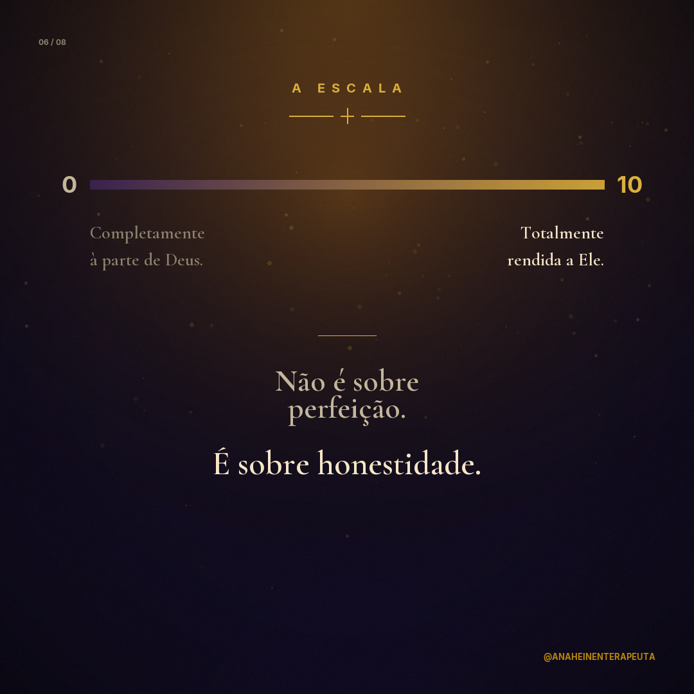

Preview — Carrossel Post 13 de 15
@anaheinenterapeuta · 8 cards · 27 de maio de 2026
01 / 08 · Capa
Você sabe onde Deus não está?
02 / 08 · O Engano
A Roda da Vida tradicional mede satisfação.
03 / 08 · A Verdade
Satisfação não é alinhamento.
04 / 08 · A Pergunta Certa

Toda a diferença está na pergunta.
05 / 08 · As 7 Áreas

Em cada uma, a mesma pergunta.
06 / 08 · A Escala

Não é sobre perfeição. É sobre honestidade.
07 / 08 · O Diagnóstico
As notas baixas não são vergonha. São mapa.
08 / 08 · A Âncora + CTA
Colossenses 3:17 + COMENTA qual área